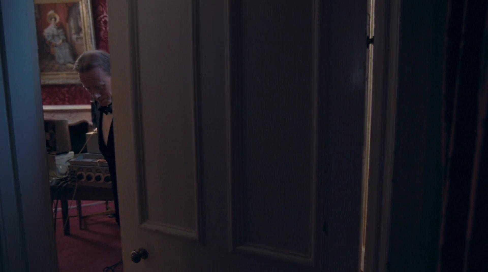
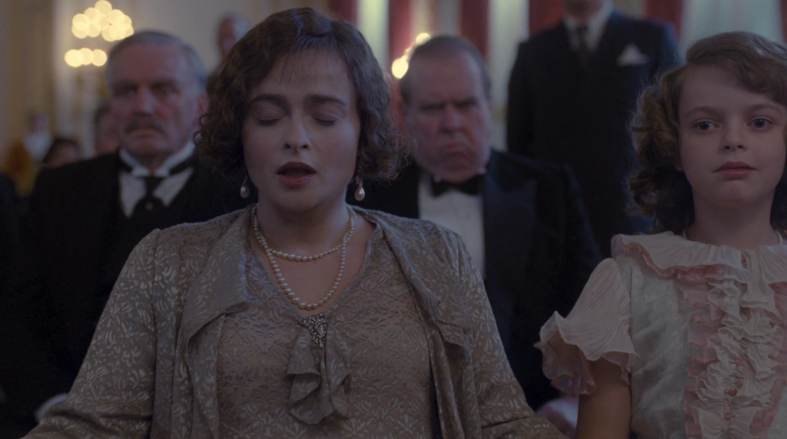
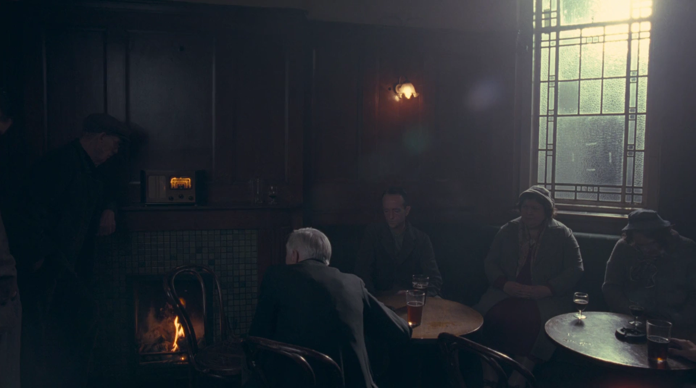
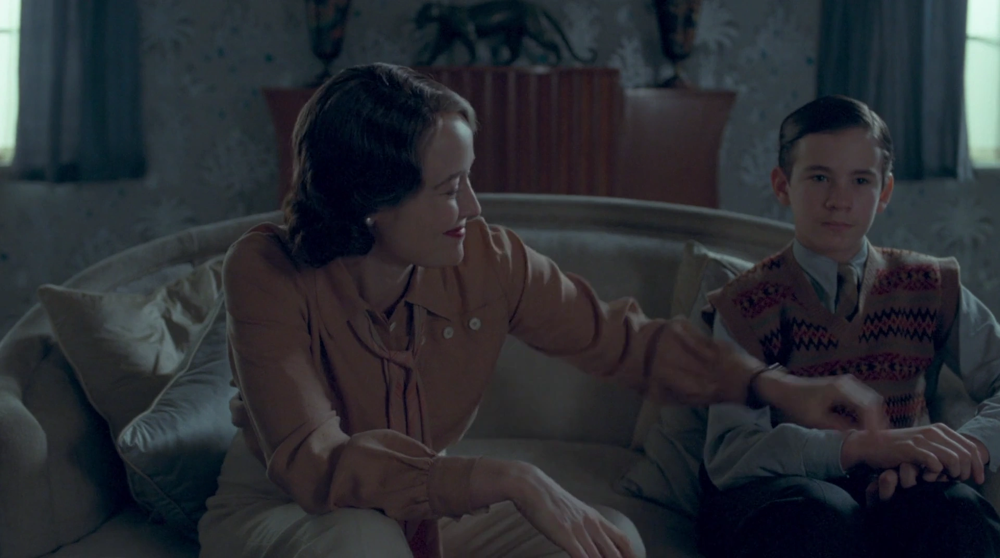

{kind=link}
| Abbrev | Film | Clip Start | Clip Stop | Duration |
|---|---|---|---|---|
| KingsSpeech | The King's Speech (2010) | 01:40:41.000 | 01:47:46.000 | 425 |
The King’s Speech
Film Information
The King’s Speech is a 2010 British historical drama film directed by Tom Hooper and written by David Seidler. Colin Firth plays the future King George VI who, to cope with a stammer, sees Lionel Logue, an Australian speech and language therapist played by Geoffrey Rush. The men become friends as they work together, and after his brother abdicates the throne, the new king relies on Logue to help him make his first wartime radio broadcast upon Britain’s declaration of war on Germany in 1939.
All information in this section came from Wikipedia.
Clip Information
King George VI addresses Britain and the British Empire over the radio after England enters into World War II with Nazi Germany. King George has been working to overcome a significant stutter with his speech therapist Lionel Logue, whom he calls Logue.
| Characteristic | Value |
|---|---|
| Format | MPEG-4 |
| File Size | 115.3 MiB |
| Duration | 425.008 |
| Frame Rate | 23.976 |
| Video Width | 1920 |
| Video Height | 1072 |
| Video BitRate | 2.1 MB/s |
| Audio Channels | 2 |
| Audio SamplingRate | 48000 |
| Audio BitRate | 129.3 kB/s |





Subtitles
The following wordcloud shows the words used in this clip, scaled by number of occurrences and colored by sentiment (orange = negative, green = positive, grey = neutral or unsure). The sentiment estimates in this plot are token-based and derived from the Bing lexicon. Note that the words have been stemmed and lemmatized and stopwords have been removed.
{kind=link}
The following figure shows the estimated sentiment (VADER compound score) for each subtitle line (orange = negative, green = positive, grey = neutral or unsure).
{kind=link}
The table below shows all subtitles in this clip with the start and stop time of each subtitle’s appearance in seconds.
| Start | End | Subtitle |
|---|---|---|
| 3.413 | 5.666 | - Mr. Wood. - Good luck, Your Majesty. |
| 8.961 | 10.087 | Mr. Wood. |
| 11.046 | 14.550 | - You've redecorated, Logue. - I made it cozy. |
| 16.301 | 19.555 | - Some fresh air. - There you are, darling. |
| 24.268 | 25.895 | I'm a thistle-sifter. |
| 25.978 | 29.073 | I've a sieve of sifted thistles and a sieve of unsifted thistles. |
| 29.147 | 32.777 | A sieve of sifted thistles and a sieve of unsifted thistles. |
| 32.859 | 34.987 | - Because I'm... - Bertie. Darling. |
| 35.070 | 37.198 | Make sure it's not switched on. |
| 37.281 | 39.158 | Remember, the red light will blink four times, |
| 39.241 | 40.993 | then I've asked them to turn it off. |
| 41.076 | 44.125 | 'Cause we don't want that evil eye staring at you all the way through. |
| 45.664 | 47.507 | One minute, sir. |
| 49.543 | 51.671 | I'm sure you'll be splendid. |
| 63.682 | 65.275 | Forty seconds, sir. |
| 68.186 | 69.779 | Logue. |
| 70.606 | 72.859 | However this turns out... |
| 74.359 | 77.659 | ...I don't know how to thank you... for what you've done. |
| 80.532 | 82.125 | Knighthood? |
| 86.580 | 88.253 | Twenty seconds. |
| 94.087 | 98.308 | Forget everything else, and just say it to me. |
| 99.551 | 102.350 | Say it to me as a friend. |
| 143.804 | 145.932 | In this grave... |
| 147.349 | 148.896 | ..hour.. |
| 154.815 | 160.788 | ...perhaps the most fateful in our history... |
| 163.115 | 165.493 | ...I send... |
| 165.575 | 168.124 | ...to every household of my... |
| 170.914 | 172.757 | ...a-peoples... |
| 175.335 | 177.212 | ...both at home... |
| 181.383 | 183.431 | ...and overseas... |
| 192.936 | 194.984 | ...this message... |
| 195.981 | 200.703 | ...spoken with the same depth of feeling... |
| 201.486 | 203.488 | ...for each one of you... |
| 203.989 | 209.086 | ...as if I were able to cross your threshold |
| 209.161 | 213.382 | and speak to you... myself. |
| 217.002 | 221.803 | For the second time in the lives of most of us... |
| 221.882 | 224.431 | ...we are... at... |
| 224.509 | 225.852 | Fuck, fuck, fuck! |
| 225.927 | 227.179 | ...at war. |
| 228.138 | 229.606 | Very good. |
| 231.183 | 235.438 | Over and over again... |
| 236.521 | 239.900 | ...we have tried to find... |
| 241.860 | 247.708 | ...a peaceful way out of the differences... |
| 248.742 | 251.370 | ...between ourselves... |
| 251.453 | 253.000 | ...and those... |
| 253.705 | 259.053 | ...who are now our... enemies. |
| 261.046 | 265.051 | But it has been... in vain. |
| 265.884 | 270.936 | We have been forced into a conflict, |
| 271.014 | 275.941 | for we are called to meet the challenge of a principle, |
| 276.019 | 280.240 | which, if it were to prevail, |
| 280.315 | 284.866 | would be fatal to any civilized order |
| 284.945 | 286.993 | in the world. |
| 287.906 | 290.580 | Such a principle, |
| 290.659 | 296.587 | stripped of all disguise, |
| 296.665 | 299.794 | is surely the mere... |
| 302.921 | 306.892 | ...primitive doctrine that might... |
| 308.426 | 310.019 | ...is right. |
| 310.971 | 316.819 | For the sake of all that we ourselves hold dean |
| 316.893 | 320.488 | it is unthinkable |
| 320.564 | 325.240 | that we should refuse to meet... |
| 325.318 | 326.991 | ...the challenge. |
| 329.531 | 334.287 | It is to this high purpose |
| 334.369 | 337.043 | that I now call |
| 337.122 | 341.093 | my people at home, |
| 341.167 | 345.673 | and my peoples across the seas, |
| 345.755 | 350.511 | who will make our cause their own. |
| 350.594 | 355.600 | I ask them to stand calm |
| 355.682 | 358.856 | and firm and united |
| 358.935 | 362.985 | in this time of trial. |
| 363.064 | 365.817 | The task will be hard. |
| 366.776 | 370.747 | There may be dark days ahead, |
| 370.822 | 376.670 | and war can no longer be confined |
| 376.745 | 379.043 | to the battlefield. |
| 379.122 | 382.126 | But we can only do the right |
| 382.208 | 384.802 | as we see the right, |
| 384.878 | 388.849 | and reverently commit |
| 388.924 | 393.395 | our cause to God. |
| 395.263 | 398.938 | If one and all we keep |
| 399.017 | 403.944 | resolutely faithful to it, |
| 404.022 | 409.950 | then, with God's help, |
| 410.028 | 413.908 | we shall... prevail. |
Holistic Ratings
A total of 77 participants watched this film clip and then provided holistic ratings on how the entire clip made them feel. These holistic ratings were completed using five Positive Affect items (i.e., alert, determined, enthusiastic, excited, inspired) and five Negative Affect items (i.e., afraid, distressed, nervous, scared, upset), each rated on an ordinal scale from 0 to 4. The plot below shows the distribution of scale scores (boxplot plus individual ratings).
{kind=link}
Dynamic Ratings
A total of 77 participants watched this film clip and used the CARMA software to provide continuous (i.e., second-by-second) ratings of how it made them feel. These continuous ratings were made on a single emotional valence scale ranging from -4 (very negative) to 4 (very positive).
Chromodoris Plot
We can plot the distribution of all valence ratings per second of the film clip to get a sense of how its emotional tone changes over time. The solid black line represents the mean of all ratings and the yellow, green, and purple ribbons represent the central 50%, 70%, and 90% of the ratings, respectively.
{kind=link}
Inter-Rater Reliability
A Bayesian generalizability study was used to decompose the variance in ratings of this video clip into the following components: timepoint variance (in average ratings of each second, across raters), rater variance (in average ratings from each rater, across seconds), and residual variance (including second-by-rater interactions and measurement error). The lower and upper columns in the table below represent the boundaries of the 95% equal-tail credible interval. Note that we dropped the first 10 seconds of each clip (as rater “warmup” time).
| Component | Term | Estimate | Lower | Upper | Percent |
|---|---|---|---|---|---|
| Rater | Variance | 1.319 | 1.011 | 1.938 | 0.490 |
| Timepoint | Variance | 0.253 | 0.222 | 0.296 | 0.094 |
| Residual | Variance | 1.118 | 1.100 | 1.135 | 0.416 |
From these variance components, we can estimate inter-rater reliability of the ratings. There are many formulations of the two-way intraclass correlation (ICC), but the most relevant to our purposes here are the balanced average-measures consistency formulation or ICC(C,k) and the balanced single-measures consistency formulation or ICC(C,1).
| Term | Estimate | Lower | Upper | Raters | Error |
|---|---|---|---|---|---|
| ICC(C,1) | 0.185 | 0.166 | 0.210 | 1 | Relative |
| ICC(C,k) | 0.946 | 0.939 | 0.953 | 77 | Relative |
Below, we can also visualize the posterior distributions of each of these parameters. Values with higher posterior density are more probable.
{kind=link}